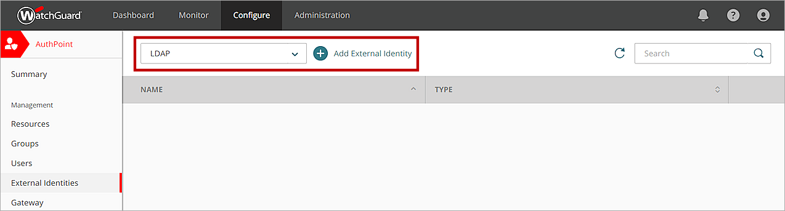

Deployment Overview
This document describes how to sync LDAP users from JumpCloud to AuthPoint. To sync users from JumpCloud, you must add an LDAP external identity in AuthPoint and create one or more queries. You must also download and install the AuthPoint Gateway.
In AuthPoint, LDAP external identities represent external user databases. They connect to user databases to get user account information and validate passwords. The queries you add to an external identity specify which users to sync from. They pull user information and create AuthPoint user accounts for the users that are found.
Configure JumpCloud
- Log in to the JumpCloud interface as an administrator.
- Select User Management > Users.
- Click to add or import users. In our example, we manually add an admin user. This user account is used by AuthPoint to find and sync other users.
- In the User Information section, you must complete these fields:
- First Name — Type a first name for this user account.
- Last Name — Type a last name for this user account.
- Username — Type a user name for this user account.
- Company Email — Type a valid email address for this user account.

- In the User Security Settings and Permissions section, select the Specify initial password check box and type a password in the Password and Confirm Password text boxes. You will use this password for this user when you configure an external identity in AuthPoint.
- Select the Enable as LDAP Bind DN check box.
- Click Save user.
The user account is created. - Go to Details page for this user and copy the LDAP Distinguished Name value. You will use this value in the next section when you configure an external identity in AuthPoint.

In our example, we create two additional user accounts.

- Select User Management > User Groups.
- Click to add a group.
- Type a name for this group. In our example, we name this group EcoTest.
The name of this group must match the name of your group in AuthPoint.

- Select the Users tab.
- Select the users that you want to sync to AuthPoint. In our example, we select the admin user and the other two users that we created.
If you want to add your users to different groups in AuthPoint, you must create multiple groups for your users in JumpCloud. You might do this if you want to different groups to have access to different resources or if you want to have different MFA options for different groups.

- Click Save.

- Select User Authentication > LDAP.
- Select JumpCloud LDAP,
- From the Details tab, copy the ORG DN value. You use this value when you add an advanced query in AuthPoint to sync your users.

- Select the User Groups tab.
- Select the user groups that you will sync to AuthPoint. In our example, we select the EcoTest group that we created.

- Select the Users tab.
- Select and bind your users.
- Click Save.

Configure AuthPoint
To configure AuthPoint to sync users from JumpCloud, you must:
- Add an LDAP external identity
- Download and install the AuthPoint Gateway
- Create one or more advanced queries
Add an External Identity
- In a web browser, go to cloud.watchguard.com and log in to your WatchGuard Cloud account.
- Select Configure > AuthPoint. If you have a Service Provider account, you must select an account from Account Manager.
- Select External Identities.
- From the Choose an External Identity Type drop-down list, select LDAP. Click Add.

- In the Name text box, type a descriptive name for the external identity.
- In the LDAP Search Base text box, type your LDAP root domain name. This is based on the LDAP Distinguished Name value from JumpCloud that you copied in the previous section. You must remove "uid=UserName" from the LDAP Distinguished Name value.
- Enable the toggle above the System Account text box.
- In the System Account DN text box, type the full LDAP Distinguished Name value that you copied from JumpCloud in the previous section. In our example, this value is uid=Jumpcloudadmin,ou=Users,o=xxxxxxx,dc=jumpcloud,dc=com.
This user must have permissions to perform LDAP searches and binds.
- In the Passphrase text box, type the password for this user. In our example, this is the password we defined in Step 5 of the previous section.
- From the Synchronization Interval drop-down list, specify how often you want to synchronize the users from the LDAP database. If you select Every 24 hours, you must also specify what time the synchronization starts each day.
- For Type, select Others.

- In the Domain text box, type jumpcloud.com.
- Type a value for each attribute.
- In the Attribute related to the first name text box, type givenName.
- In the Attribute related to the last name text box, type sn.
- In the Attribute related to the user email text box, type mail.
- In the Main attribute to the LDAP user text box, type uidNumber.
- In the Attribute related to the user login text box, type uid.
- In the Attribute related to the mobile number text box, type homePhone.
You might need to change some of these values based on how your organization has configured JumpCloud.
- In the Server Address text box, type ldap.jumpcloud.com.
- Make sure the LDAPS toggle is enabled.
- In the Server Port text box, type 636.

- Click Save.
Configure and Install the AuthPoint Gateway
The LDAP external identity must be added to the configuration for a Gateway that is installed on your corporate network and has access to the JumpCloud server.
If you do not have an existing Gateway, you must add one.
- From the navigation menu, select Gateway.
- Click the Name of your Gateway. If you do not have an existing Gateway, click Add Gateway.
- If this is a new Gateway, type a name for the Gateway.
- In the LDAP section, from the Select an LDAP external identity list, select the external identity you created in the previous section.

- Click Save.
- If this is a new Gateway, you must download and install the AuthPoint Gateway on your network in a location that has Internet access and can connect to your JumpCloud server. For detailed steps to install a Gateway, see to the Download and Install the Gateway section in the About Gateways help topic.
When you install the AuthPoint Gateway, you must have the registration key for your Gateway. To see this value, click the Registration Key link at the bottom of the tile for your Gateway on the Gateway page in AuthPoint.
Create an Advanced Query and Sync Your Users
After you create an external identity for JumpCloud, you must add an advanced query to specify:
- The JumpCloud users to sync
- The AuthPoint group to add the users to
After you add an advanced query to find your users, AuthPoint syncs with JumpCloud at the next synchronization interval and creates an AuthPoint user account for each user identified by the query. If the query returns more users than you have available licenses for, AuthPoint only creates as many users as your license supports.
LDAP users that do not have a name, user name, or email address are not included in the synchronization.
Make sure that each user account has a valid email address. If the email address for a user account is not correct, the user cannot receive the email message to activate a token.
To add an advanced query:
- From the navigation menu, select External Identities.
- Next to the external identity you added for JumpCloud, click and select Check Connection. This indicates whether AuthPoint can connect to JumpCloud.
- Next to the external identity you added for JumpCloud, click and select Advanced Query.
- Click the Add Advanced Query.
- In the Name text box, type a descriptive name for the query.
- From the Group drop-down list, select the AuthPoint Group to add the users to. This AuthPoint group name must match the name of the JumpCloud group that you sync users from.
- In the Advanced Query text box, type memberOf=cn=<Your Group Name>,ou=Users,<Your ORG DN>. We copied the ORG DN value from JumpCloud in the Configure JumpCloud section.

- Click Validate Advanced Query to preview your query results. You can see the number of users your query returns and a preview of the first 10 users.
No users are synced when you validate a query. Users are only synced after you have added your query to the external identity and saved the changes.

- Click OK.
- Click Add.

- (Optional) To sync your users now, on the External Identities page, next to the your external identity, click and select Start Synchronization. If you do not sync your users now, AuthPoint syncs with JumpCloud at the next synchronization interval.
An AuthPoint user account is created for each user identified by the advanced query. The created user accounts appear on the Users page. You can identify users synced from an external identity by the LDAP tag next to their name in the list of users.
Each user is sent an email that they use to activate their token in the AuthPoint mobile app. When a user activates their token, their token information is shown in the Token column with a green Activated status icon next to the token.